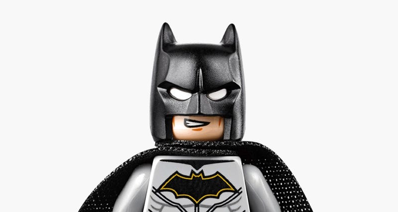

¡My hero academy!
Bienvenidos a Musutafu
One for all
Midoriya

Izuku Midoriya también conocido como Deku, es el protagonista principal de la serie de manga y anime My Hero Academia. A pesar de que Izuku nació sin don, logró captar la atención del legendario héroe All Might y desde entonces se ha convertido en su alumno cercano, así como en un estudiante de la Clase 1-A en la Academia U.A.. All Might le transfirió su don a Izuku, convirtiéndolo en el noveno y actual usuario del One For All.
¿Sera el final de All Might?
All Might le hereda su poder a Deku
Deku ¿Como obtuvo su don?
Hace mucho tiempo, All For One, un hombre con un Don que podía robar otros Dones y regalarlos, le dio a su hermano menor, Yoichi Shigaraki, aparentemente Sin Don, un Don que le permitió acumular poder dentro de su cuerpo. Sin embargo, sin que alguno de los dos lo supiera, Yoichi ya tenía un Don sin otro efecto más que el que podía transferir ese Don a otros. El Don de Transferencia y el Don de Acumulación de poder se fusionaron en uno y desde entonces se convirtieron en One For All.
Es de mucho debatir para elegir un sucesor, y poco antes de que comenzara a enseñar en la U.A. para ayudarlo a encontrar uno, se encuentra con Izuku, un chico sin Don como él. Impresionado con el deseo de Izuku de convertirse en un héroe y con su espíritu desinteresado para salvar, lo elige para convertirse en el noveno y actual portador.

El comentario mas random:
Miguel: Apuesto 10 dolares a que naruto le gana con los ojos cerrados
Post mas gracioosos
-
All Might
Felicidades joven Midoriya nunca olvides que puedes ir mas allá de tu potencial. -
Kaminari
Los villanos son deviles los heroes son muy pro's! -
Bakugo
Tengo que demostrar que puedo ser el heroe #1 -

Sebitas
I'm Batman
Tags
Resumen Shoto Recomendaciones Anime UA Villanos Ver online Personajes Regresar Trajes
Inspiration